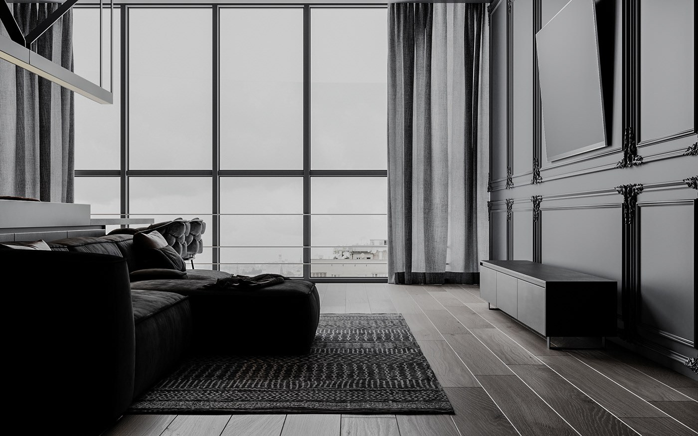

Межі
Щоб скоротити код, також можна вказати всі окремі властивості межі в одній властивості.
У мене ліва синя межа
Поля та внутрішній відступ
Ширина цього div залишається рівною 300 пікселів, незважаючи на 50 пікселів загального лівого та правого відступу, через властивість box-sizing: border-box.
Списки
- Кава
- Чай
- Молоко
Посилання і кнопки
Випадаюче зображення
Наведіть вказівник миші на зображення нижче, щоб відкрити розкривний список вмісту.

Modern house style in architecture